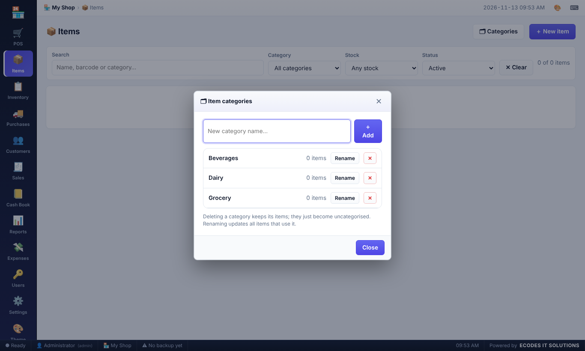
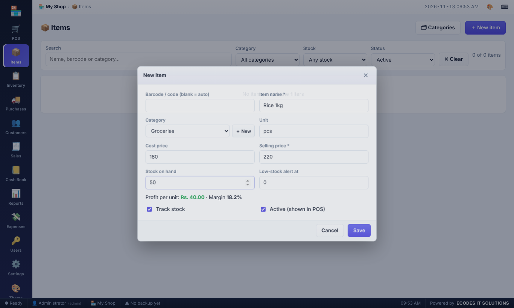
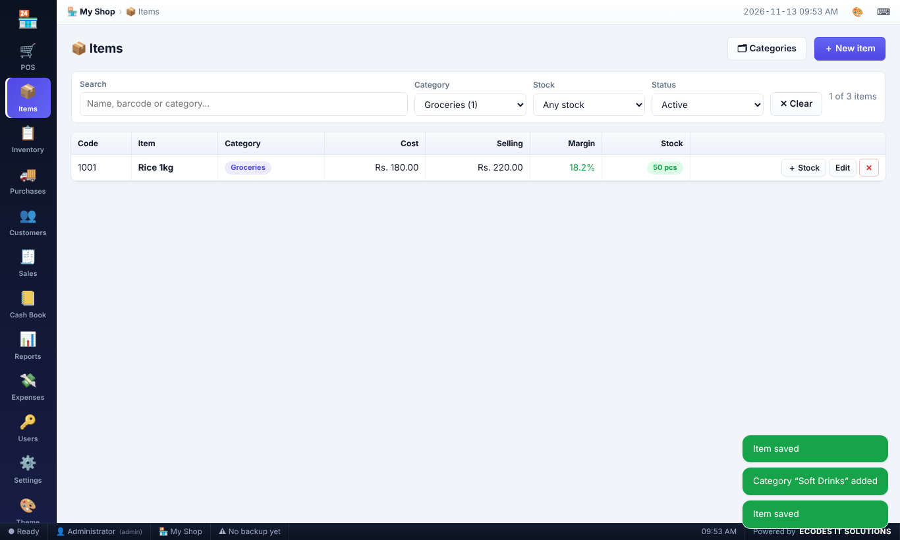
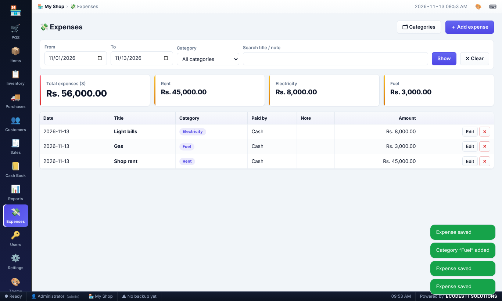
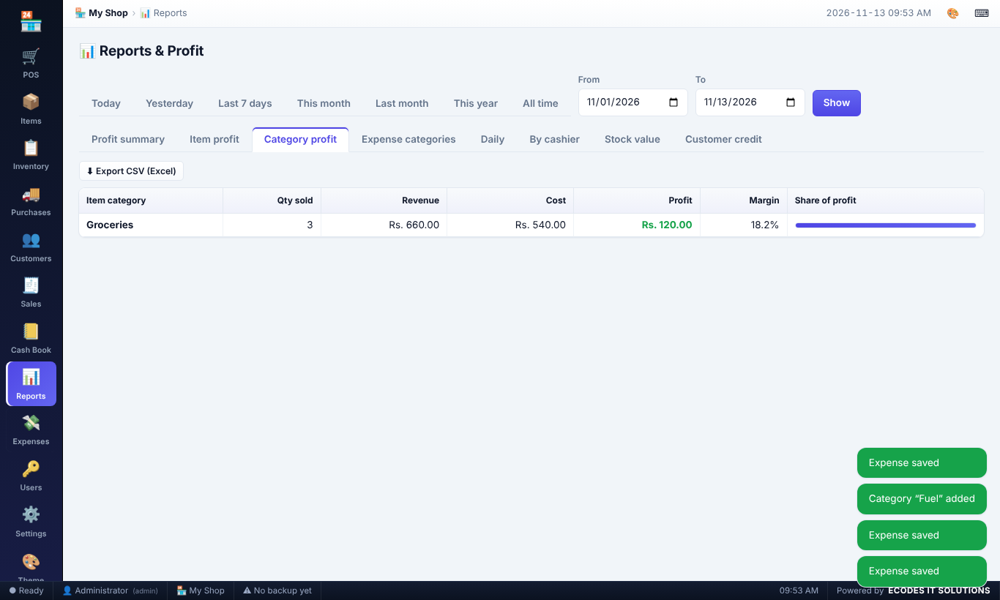
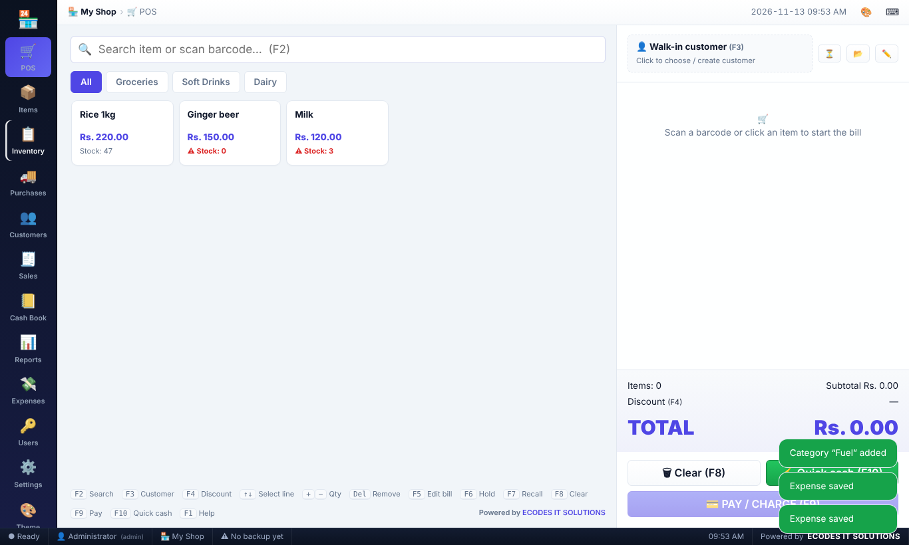

User Manual
Point of sale · Customer credit · Profit reports · Automatic backup
%APPDATA%\Easy POS\data\pos-data.json. Uninstalling the program does not delete your data.xattr -cr "/Applications/Easy POS.app", then open it again. (Or: System Settings → Privacy & Security → Open Anyway.)~/Library/Application Support/Easy POS/data/pos-data.json; backups go to Documents/EasyPOS-Backups unless you choose another folder.On first start sign in with username admin and password admin. Immediately go to Settings → My account and change the password.
Recommended order for a new shop:
Use the left menu to move between pages (or Alt+1…9). Theme switches light/dark mode. Logout signs the user out. F11 toggles full screen.

Open Settings (administrator only) and fill in:
| Field | What it does |
|---|---|
| Company name, address, email, contact no., website | Printed at the top of every receipt and invoice. |
| Upload logo | Choose a PNG/JPG. It is resized automatically and shown on receipts, invoices and in the menu. Remove clears it. |
| Advertisement / promo message | A short advert (e.g. “Buy 2 get 1 free – visit www.myshop.com”) printed near the bottom of every bill. |
| Invoice footer | Closing text such as “Thank you! Goods once sold are not returnable.” |
| Paper / printer type | 58 mm thermal, 80 mm thermal or A4 invoice. |
| Printer | Choose a specific printer or use the Windows default. |
| Currency symbol, tax name and % | Tax is added to the bill total. Leave 0 for no tax. |
| Print after every sale / Print directly | Automatic printing with or without the Windows print dialog. |
| POS rules | Allow selling when stock is 0; let cashiers change prices or give discounts. |
Click Print test receipt to preview the layout. Always click Save settings after changes.

Go to Items → ＋ New item.
| Field | Meaning |
|---|---|
| Barcode / code | Scan the product barcode here. Leave blank to auto-create a code. |
| Item name | Required. |
| Category | Used for the filter buttons on the POS screen. |
| Cost price | What you pay the supplier. Used to calculate profit. Cashiers cannot see it. |
| Selling price | What the customer pays. The profit per unit and margin % are shown live. |
| Stock on hand / Low-stock alert | Quantity in the shop. Items at or below the alert level are highlighted red. |
| Track stock | Untick for services or items without stock counting. |

Create categories: on the Items page click 🗂 Categories. Type a name and press Enter to add. Rename changes the name on every item that uses it. ✕ (click twice to confirm) deletes the category – its items are kept and become “Uncategorised”.

Select a category on an item: in the item form, pick it from the Category drop-down. Need a new one? Click ＋ New beside the drop-down, type the name and press Enter – it is created and selected immediately.

Filters: the Items page has a filter bar – Search, Category (with item counts), Stock (In stock / Low / Out of stock) and Status (Active / Inactive / All). ✕ Clear resets them. The same Category filter is available in Inventory → Stock levels and Reports → Item profit. On the POS screen the category buttons above the item grid filter the items you sell.


Payment window: pick Cash / Card / Online / Credit, type the amount received (or use the quick buttons). The window shows the change to give back, or the amount that will go on credit. Press Enter to complete the sale.

A big change display appears after the sale and the receipt prints automatically (if enabled). Press Enter for the next customer.
| Key | Action |
|---|---|
| F1 | Show shortcut help |
| F2 | Focus the search / barcode box |
| Enter in search | Add exact barcode match, or the first search result |
| F3 | Choose or create customer |
| F4 | Bill discount |
| ↑ ↓ | Select a bill line |
| + / − | Increase / decrease quantity of the selected line (search box must be empty) |
| * | Type the quantity of the selected line |
| Delete | Remove the selected line |
| F5 | Edit a saved bill in the POS screen |
| F6 / F7 | Hold bill / Recall held bill |
| F8 | Clear bill |
| F9 | Payment |
| F10 | Quick cash sale and print |
| Ctrl+P | Reprint last receipt |
| Esc | Close a window / clear search |
| Alt+1…9 | Switch pages |
| F11 | Full screen |

Create a customer in Customers → ＋ New customer, or press F3 on the POS screen and click ＋ New customer. Optional fields: credit limit (0 = no limit) and opening balance (money the customer already owes).
Selling on credit: select the customer, press F9, then either choose Credit (whole bill on credit) or type a smaller amount received – the remainder is added to the customer's balance. A customer is required for any credit sale, and the sale is refused if the credit limit would be exceeded.
Receiving money: Customers → 💵 Receive → enter the amount and method. The balance goes down and a payment receipt can be printed.
Ledger: shows every credit sale and payment with a running balance. The top of the Customers page shows the total you still have to collect.
Sales lists invoices for a date range with search. Click View / Print to preview and reprint any invoice. Administrators can Void a sale: stock is returned and any credit is removed from the customer. Voided sales show VOID and are excluded from reports.

Expenses (rent, electricity, salaries…) are entered under Expenses → ＋ Add expense. They are subtracted to give net profit.
Reports (administrator only) – choose a quick range (Today, Yesterday, Last 7 days, This month, …) or custom dates, then a tab:
| Tab | Shows |
|---|---|
| Profit summary | Bills, sales, cost of goods, gross profit, expenses, net profit, discounts, tax, credit given, payments received, margin %, and a daily chart. |
| Item profit | Quantity, revenue, cost and profit for every item, best first. |
| Daily | Sales and profit per day. |
| By cashier | Sales and profit per user. |
| Stock value | Stock at cost and at selling price, low-stock items. |
| Customer credit | Everyone who owes money and how much. |
Profit = selling price − cost price of the items sold, after discounts (tax is not counted as profit). Export CSV opens in Excel.

Expenses can be grouped by category (Rent, Electricity, Water, Salaries, Transport, Maintenance, Marketing, Other are provided). On Expenses click 🗂 Categories to add, rename or delete categories. In the Add expense form choose the Expense category from the drop-down (or ＋ New to create one on the spot).
The Expenses page filters by date, category and text, and shows the total plus the biggest categories as cards. Reports → Expense categories lists each category with its entries, amount and share of total expenses; Reports → Category profit shows sales, cost and profit for each item category.


Inventory → Stock levels shows every item with quantity, alert level and stock value at cost and selling price. Low-stock items are red.
⚖ Adjust / Count corrects stock: Set counted qty (stock-take – type what you counted), Add, or Remove. Choose a reason (damaged, expired, lost, customer return…) and an optional note. The window shows the new stock before you save.

Inventory → Inventory log records every stock movement: sales, voided sales, GRN received, voided GRN, adjustments, bill edits and opening stock. Each line shows the change, stock before → after, reference number, user and note. Filter by dates, type or item, and export to CSV. The Log button on a stock row opens the history of just that item.

Open a GRN with View to see its lines. Administrators can Void a GRN – the stock is removed again.

The Suppliers tab shows how much you owe each supplier and the total payable. Use 💸 Pay to record a payment (cash, bank, cheque or online), with a date and a note such as the cheque number. Ledger shows all purchases and payments with a running balance. The Supplier payments tab lists every payment for a period (and lets you delete a wrong entry). Cash payments automatically appear in the cash book.

Cash Book shows the cash drawer for one day: opening cash → cash in → cash out → closing cash. Use ◀ ▶ or the date box to change day.
| Cash IN | Cash OUT |
|---|---|
| Cash sales, customer payments received in cash, GRN refunds, manual “Cash in” | Cash paid on GRN, supplier payments in cash, cash expenses, sale refunds (voids), manual “Cash out” (bank deposit, drawings…) |

The Day-wise summary tab lists opening, in, out, closing, counted cash and difference for every day. Click a date to open that day's book.

If a bill was entered wrongly you can correct it without leaving the POS screen:
The invoice number and original date stay the same; edited bills show an EDITED tag in the Sales list. Administrators can always edit bills; cashiers only if you tick Settings → Cashier can edit own saved bills. Voided bills cannot be edited.

| Role | Can do |
|---|---|
| Administrator | Everything: items and cost prices, inventory, GRN and suppliers, cash book, reports, expenses, users, settings, backups, voiding sales. |
| Cashier | POS, customers and credit payments, view/reprint own sales (edit them only if allowed). Cannot see cost price, profit, purchases, inventory log or cash book. |
Users → ＋ New user: enter name, username, password and role. Editing a user with a blank password keeps the old password. A user who has made sales is disabled instead of deleted. At least one active administrator must always exist.
In Settings → Backup:
Documents\EasyPOS-Backups). Choosing a USB drive or a synced cloud folder (OneDrive, Google Drive) is recommended.pos-backup-….json file from the backup folder.
Click 🎨 Theme (left menu or top bar) to choose Light / Dark mode, the Style – Desktop (flat panels, grid tables, window-style dialogs, like a classic desktop program) or Rounded (soft modern cards) – the Density (Comfortable or Compact for small screens and long lists) and one of six accent colours. The top bar shows where you are and the date/time; the bottom status bar shows the signed-in user, shop name, last backup and the time. Your choices are remembered on this computer.

| Problem | Solution |
|---|---|
| Forgot the admin password | Ask another administrator to reset it in Users. If there is none, restore an old backup made while the password was known. |
| Nothing prints | Check the printer works in Windows, select it in Settings, and try Print test receipt. Untick “Print directly” to see the Windows dialog and any error. |
| Barcode not found | Make sure the item's code in Items matches the barcode exactly and the item is Active. |
| “Credit limit exceeded” | Receive a payment from the customer or raise the limit in Customers → Edit. |
| “Select a customer to sell on credit” | Press F3 and choose a customer before paying. |
| Backup warning in Settings | The backup folder may be unavailable (drive removed or full). Choose another folder. |